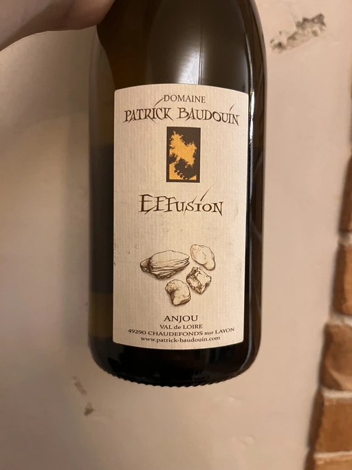

- Type
- White Still, Dry
- Producer
- Domaine Patrick Baudouin
- Vintage
- 2019
- Location
- France, Anjou AOC
- Grapes
- Chenin Blanc
- Alcohol
- 14
- Sugar
- NA
- Price
- 699 UAH
- Cellar
- N/A
Average age of vines is 26 years.
Ratings
2022-08-30 - 7.50
When it comes to pebbles, I really love those covered with moss. Maybe because it brings me back to my childhood, or because I enjoy nasty things (except for mercaptan, nobody loves you). But having a mossy pebble or two in my glass is something I find pleasant. After that, I can ignore all these unripe apricots notes together with blossoms and lemons. High acidity? Cool, but flavours! Flavours of mossy pebbles and limestone (with irrelevant notes of unripe apricot that associates with funny stomachs; and lime). In all seriousness, it’s a tasty wine and an interesting one, despite its lack of integrity.